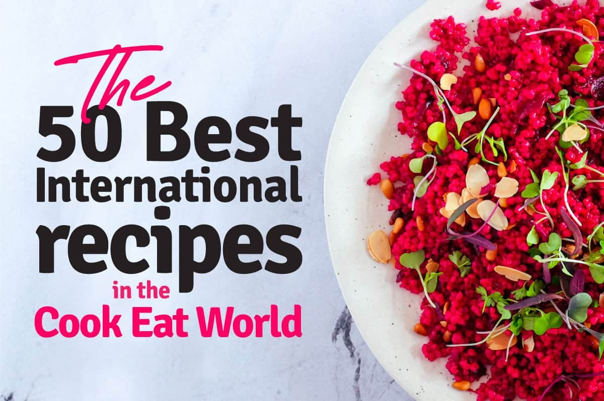

Recipes suggestions

Quiche Lorraine
Quiche Lorraine is a French tart with a filling made of cream, eggs, and bacon or ham, in an open pastry case...

Salpicão
Salpicão de Frango, chicken salpicão, is a Brazilian dish made with cooked shredded chicken and traditionally dressed with a mayonnaise base...

Lasagne
As with most other types of pasta, the Italian word is a plural form: lasagne meaning more than one sheet of lasagna, though, in many other languages, a ...